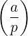
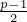

| Up | Next | Tail |
REDUCE includes a number of functions that are analogs of those found in most numerical systems. With numerical arguments, such functions return the expected result. However, they may also be called with non-numerical arguments. In such cases, except where noted, the system attempts to simplify the expression as far as it can. In such cases, a residual expression involving the original operator usually remains. These operators are as follows:
abs returns the absolute value of its single argument, if that argument has a numerical value. A non-numerical argument is returned as an absolute value, with an overall numerical coefficient taken outside the absolute value operator. For example:
This operator returns the ceiling (i.e., the least integer greater than the given argument) if its single argument has a numerical value. A non-numerical argument is returned as an expression in the original operator. For example:
This returns the complex conjugate of an expression, if that argument has a numerical value. By default the complex conjugate of a non-numerical argument is returned as an expression in the operators repart and impart. For example:
If rules have been previously defined for the complex conjugate(s) of one or more non-numerical terms appearing in the argument, these rules are applied and the expansion in terms of the operators repart and impart is suppressed.
For example:
Note that in defining the rule conj z => z!*, the rule conj z!* => z is (in effect) automatically defined and should not be entered by the user. A more convenient method of associating two identifiers as mutual complex-conjugates is to use the complex_conjugates declaration as described in the section Declaring Complex Conjugates.
The main use of rules for conj is to associate two identifiers as complex conjugates as in the examples above. In addition rules of the form let conj(z)=>z, conj(w)=>-w may be used. They imply that z is real-valued and w is purely imaginary, although the effect of the first rule can also be obtained by declaring z to be realvalued.
Rules of the form let conj z => «some-expression» may be used, but are not recommended. More useful results will usually be obtained by defining the equivalent rule let z => conj(«some-expression»). Rules of the form let conj z => «some-expression» are particularly problematic if «some-expression» involves z itself as they may be inconsistent, for example let conj z => z+1. Even where they are consistent, better results may usually achieved by defining alternative rules. For example, given:
so that the real part of z is a and the imaginary part of w is b, more useful results will be obtained by defining the mathematically equivalent rules:
Note also that the standard elementary functions and their inverses (where appropriate) are automatically defined to be selfconjugate so that conj(f(z)) is simplified to f(conj(z)). User-defined operators may be declared to be self-conjugate with the declaration selfconjugate.
These operators convert an angle in degrees to radians and vice-versa. rad2deg converts the radian value to an angle in degrees expressed as a single floating point value (according to the currently specified system precision). The value to be converted may be an integer, a rational or a floating value or indeed any expression that simplifies to a rounded value. In particular numerical constants such as π may be used in the input expression. deg2rad performs the inverse conversion.
rad2dms converts the radian value to an angle expressed in degrees, minutes and seconds returned as a three element list. The degree and minute values are integers the latter in the range 0…59 inclusive and the seconds value is a floating point value in the half-open interval [0,60.0). Similarly, deg2dms converts an angle given in degrees into a such a three element list.
The purpose of the operators dms2rad and dms2deg should also be obvious. The degree, minute and second value to be converted is passed to the conversion function as a three element list. There is considerable flexibility allowed in format of the list supplied as parameter – all three values may be integers, rational numbers or rounded values or any combination of these; the minute and second values need not lie between zero and sixty. The list supplied is simplified with the appropriate carrys and borrows performed (in effect at least) between the three values. For example
If the single argument of factorial evaluates to a non-negative integer, its factorial is returned. Otherwise an expression involving factorial is returned. For example:
This operator returns the fixed value (i.e., the integer part of the given argument) if its single argument has a numerical value. A non-numerical argument is returned as an expression in the original operator. For example:
This operator returns the floor (i.e., the greatest integer less than the given argument) if its single argument has a numerical value. A non-numerical argument is returned as an expression in the original operator. For example:
This operator returns the imaginary part of an expression, if that argument has an numerical value. A non-numerical argument is returned as an expression in the operators repart and impart. For example:
For the inverse trigometric and hyperbolic functions with non-numeric arguments the output is usually more compact when the factor is on.
The operator legendre_symbol(a,p) denotes the Legendre symbol
|
 ≡ a (mod p) |
which, by its very definition can only have one of the values {−1,0,1}.
max and min can take an arbitrary number of expressions as their arguments. If all arguments evaluate to numerical values, the maximum or minimum of the argument list is returned. If any argument is non-numeric, an appropriately reduced expression is returned. For example:
max or min of an empty list returns 0.
nextprime returns the next prime greater than its integer argument, using a probabilistic algorithm. A type error occurs if the value of the argument is not an integer. For example:
whereas nextprime(a) gives a type error.
random(n) returns a random number r in the range 0 ≤ r < n. A type error occurs if the value of the argument is not a positive integer in algebraic mode, or positive number in symbolic mode. For example:
whereas random(a) gives a type error.
random_new_seed(n) reseeds the random number generator to a sequence determined by the integer argument n. It can be used to ensure that a repeatable pseudo-random sequence will be delivered regardless of any previous use of random, or can be called early in a run with an argument derived from something variable (such as the time of day) to arrange that different runs of a REDUCE program will use different random sequences. When a fresh copy of REDUCE is first created it is as if random_new_seed(1) has been obeyed.
A type error occurs if the value of the argument is not a positive integer.
This returns a two-element list of the real and imaginary parts of an expression, if that argument has an numerical value. A non-numerical argument is returned as an expression in the operators repart and impart. This is more efficient than calling repart and impart separately particularly if its argument is complicated. For example:
For the inverse trigometric and hyperbolic functions with non-numeric arguments the output is usually more compact when the FACTOR is on.
This returns the real part of an expression, if that argument has an numerical value. A non-numerical argument is returned as an expression in the operators repart and impart. For example:
For the inverse trigometric and hyperbolic functions with non-numeric arguments the output is usually more compact when the FACTOR is on.
This operator returns the rounded value (i.e, the nearest integer) of its single argument if that argument has a numerical value. A non-numeric argument is returned as an expression in the original operator. For example:
sign tries to evaluate the sign of its argument. If this is possible sign returns one of 1, 0 or -1. Otherwise, the result is the original form or a simplified variant. For example:
Note that even powers of formal expressions are assumed to be positive only as long as the switch complex is off.
| Up | Next | Front |